Vaishnavi Singh
Partnering with schools to strengthen teaching, academic systems and implementation.
I help school leaders and teachers move from scattered concerns to structured, evidence-informed improvement — across leadership, systems and classrooms.
I help schools think deeper, plan better and improve with intention.
With 8+ years in education as a teacher, coordinator and systems leader, I now partner with schools to strengthen teaching practices, build academic systems and develop both educators and learners.
My work is rooted in research, classroom realities and a deep belief that meaningful change happens when we focus on what truly matters.
What I Bring to Schools
- A systems lens to identify patterns and priorities
- Practical, hands-on training that teachers can implement
- Tools, frameworks and processes that build consistency
- Evidence-based planning and measurable improvement
- A partner who cares about people as much as performance
How I Work
A continuous cycle, not a one-time checklist — every engagement moves through these five stages, then loops back into the next.
- UnderstandListen deeply and ask the right questions.
- DiagnoseIdentify gaps and root causes.
- DesignCreate practical solutions that fit your context.
- ImplementBuild capability through training, coaching and tools.
- ImproveMeasure impact, refine and sustain change.
Values That Guide My Work
Teachers and students at the centre.
Honest, ethical and transparent in every step.
Decisions based on data, not assumptions.
Solutions that are realistic and sustainable.
Working with schools, not just for them.
My Philosophy
Look beneath the surface.
Most school problems are symptoms. What we see on the surface is rarely the whole story. Real improvement begins when we look beneath.
When we understand the real causes, our solutions create lasting impact.
I work with schools at three interconnected levels.
Strong teaching happens when leadership, systems and classrooms work hand in hand. The most effective schools improve these three layers together, not independently.
School Improvement Consultancy
I partner with school leaders to strengthen academic systems, operations and culture.
- Academic audits & diagnostics
- Policy & SOP design
- Implementation support
- Process improvement
- Leadership advisory
Teacher Development
I build teacher capacity through practical, research-informed professional learning.
- Pedagogy & instructional practice
- Questioning & thinking routines
- Assessment for learning
- AI & EdTech for teaching
- Coaching & classroom support
Student Capability Development
I design programmes that help students think deeper, communicate better and lead with confidence.
- Critical thinking (Pixel Minds)
- Communication & collaboration
- Leadership & decision-making
- Values, wellbeing & digital wellness
When leadership, systems and classrooms strengthen together, students experience coherent learning that leads to real growth.
From insight to impact.
I help schools move from scattered concerns to structured improvement through a clear, evidence-informed approach.
My Work Follows a Simple Process
- UnderstandListen, observe and ask better questions.
- InvestigateCollect and analyse evidence with clarity and objectivity.
- DiagnoseIdentify the real causes, not just the symptoms.
- DesignCo-create practical, context-sensitive solutions.
- Support & RefineWork with teachers and leaders to implement, build capacity and sustain change.
I Work Across Four Connected Levels
School Improvement Consultancy
- Academic audits & diagnostics
- Policy design & SOPs
- Implementation support
Teacher Development
- Pedagogy & professional learning
- Classroom strategies & assessment
- AI & EdTech integration
Student Capability Development
- Critical thinking & communication
- Leadership & decision-making
- Study skills & metacognition
Curriculum & Resources
- Lesson and learning design support
- Curriculum development
- Teacher & student resources
Sustainable improvement happens when evidence meets action.
Inside schools, this is where my work is today.
Every engagement adds another layer to how I understand schools. While each school is different, the questions I explore often connect around teaching, systems, leadership and implementation.
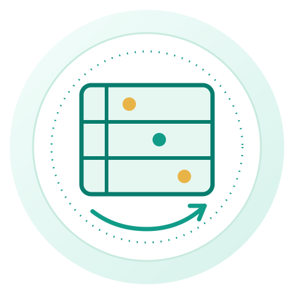
Academic Observation Frameworks
Designing observation systems that generate evidence instead of judgement.
Current Work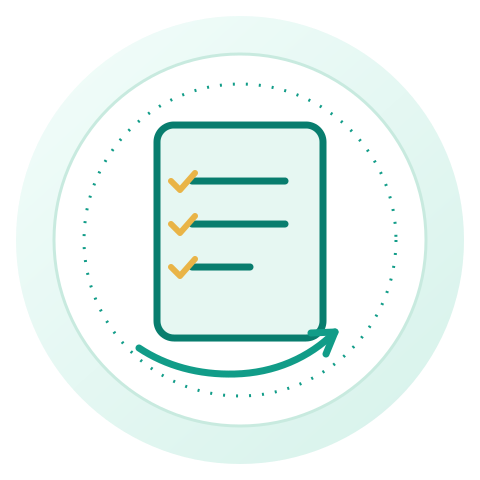
School Systems & SOP Design
Working with leadership teams to strengthen policies, operational systems and implementation.
Current WorkTeacher Professional Learning
Helping schools redesign professional development around actual classroom needs.
Current Work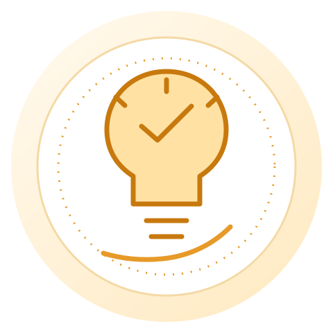
Critical Thinking Curriculum
Developing Pixel Minds — a thinking skills curriculum for students in Grades 6–10.
In Development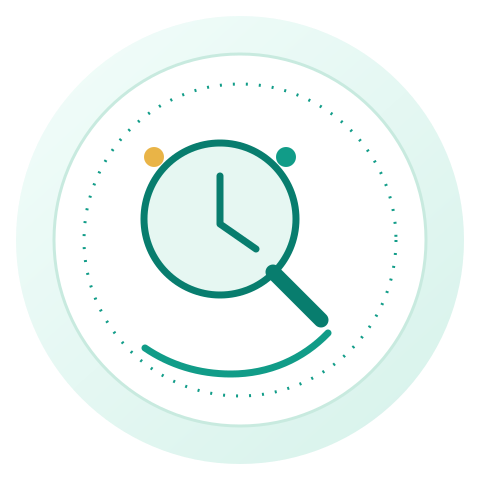
School Improvement Reviews
Examining patterns across classrooms and academic systems to identify what matters most.
Current WorkResearch & Field Notes
Documenting observations, testing ideas and refining frameworks through ongoing school work.
OngoingMy work is always in service of one goal: helping schools create the conditions for meaningful and measurable improvement.
A journey from the classroom to school-wide improvement.
Teacher
Taught Physics & Mathematics across middle and high school.
What teaching and learning actually look like inside a classroom.
Internal Auditor
Reviewed academic and operational practices across school systems.
To look beyond isolated incidents and identify patterns, gaps and root causes.
Trainer
Designed and facilitated professional learning for educators.
That professional learning works only when teachers can translate it into classroom practice.
Consultant
Partner with schools on academic systems, teaching practice and implementation.
Sustainable improvement requires leadership, systems and classrooms to move together.
Every role gave me a different lens. Together, they help me understand schools holistically and support meaningful improvement.
Every school is different. So is every improvement journey.
Rather than applying the same solution everywhere, I work with each school to understand its context, identify priorities and design support that fits its people, systems and goals.
National Public School, Uttarahalli
Focus Areas
- School systems and academic processes
- Teacher induction programme
- Teacher professional development
- Parent & student orientation
- Staff agreement & employment documentation
- Policies, SOPs & teacher handbook
- Classroom observation frameworks
- Academic review systems
- Leadership advisory & implementation support
Contribution
Working closely with the leadership team to strengthen academic systems, establish operational clarity, build documentation, support staff development and create structures that improve day-to-day implementation across the school.
Improvement became easier once expectations were documented and ownership became clearer.
Sri Guru International Public School
Focus Areas
- Initial school setup
- Teacher support
- Skill development programme
- Academic planning
- Student development initiatives
- Leadership consultation
Contribution
Supporting the leadership team during the school's early development by contributing to planning, teacher capability and programmes that strengthen student learning beyond academics.
New schools have the advantage of building strong systems before weak habits become routine.
Scholastic
Focus Areas
- Singapore AlphaMath familiarisation
- Teacher training workshops
- Classroom implementation support
- Curriculum enrichment
- Question design for AlphaMath books
- Resource development
Contribution
Facilitating teacher familiarisation sessions for the Singapore AlphaMath programme and contributing curriculum questions and enrichment activities designed to support classroom implementation.
A resource becomes powerful only when teachers understand how and when to use it.
Current Partnerships
The work I undertake varies across schools, but the purpose remains consistent: strengthening teaching, systems and implementation in ways that are practical and sustainable.
Supporting schools through professional learning and academic consulting.
Beyond long-term partnerships, I work with schools in diverse ways through workshops, orientations, coaching sessions and curriculum support — always with the aim of strengthening teaching, systems and student learning.
Teacher Development
Workshops and training sessions for teachers across schools.
- Planning for Learning
- AI in Education
- Understanding Today's Learners
- Classroom Culture
- Questioning & Thinking Routines
- Active Learning
- Assessment for Learning
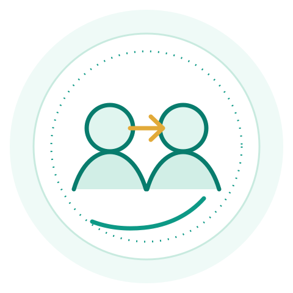
Parent Orientation
Helping schools build clarity, trust and partnership with parents.
- School policies & expectations
- Student behaviour & routines
- Home–school partnership
- Supporting learning at home
- Communication protocols
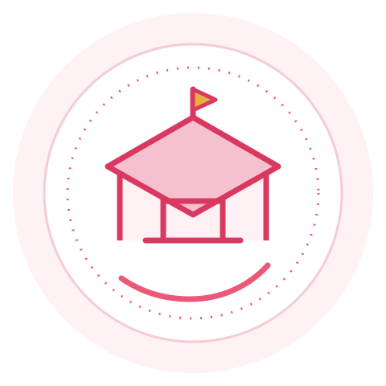
Student Orientation
Supporting students in stepping into the school year with confidence.
- School culture & values
- Routines & responsibilities
- Learning mindset
- Peer relationships
- Goal setting
Leadership Conversations
Working with school leaders on instructional priorities and systems.
- Instructional leadership
- Implementation planning
- Observation & feedback systems
- School improvement planning
Curriculum Development
Designing resources that teachers can use with confidence.
- Lesson plans & activity design
- Resources & worksheets
- Question design
- Academic enrichment materials
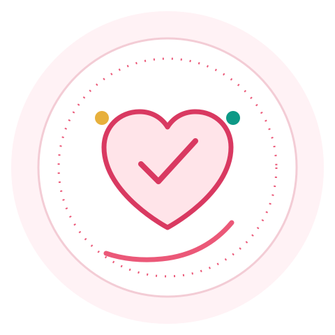
What I Bring to Every Engagement
- Clarity of purpose
- Respect for context
- Evidence-informed thinking
- Practical, workable solutions
- Focus on implementation
Professional learning and advisory support create the conditions for teachers to grow, students to thrive and schools to improve. Improvement is not an event — it is a series of small, intentional conversations and decisions.
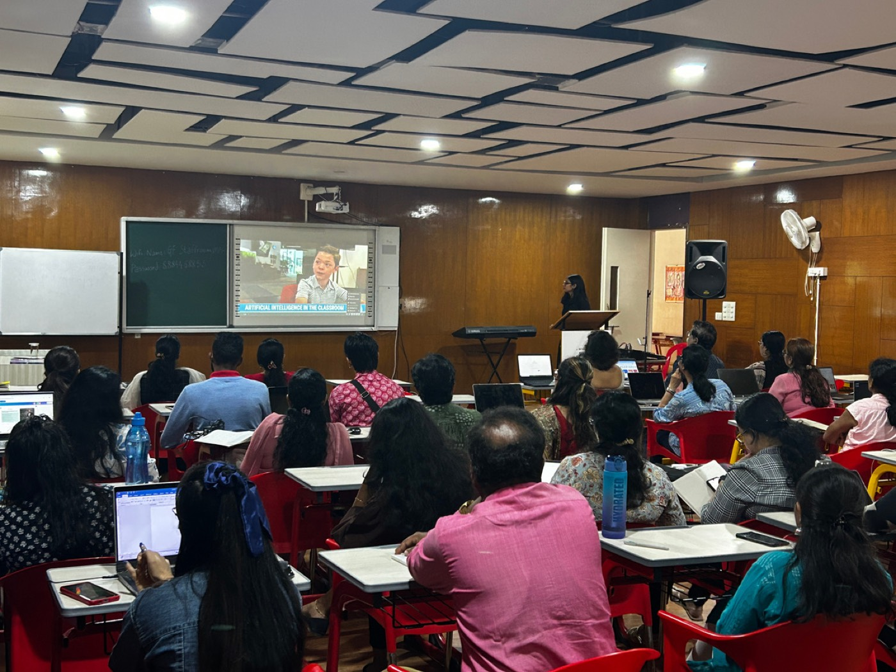
Designed to spark thinking and drive change.
Across schools, I design and facilitate context-relevant workshops that help teachers strengthen their practice, rethink classrooms and build a culture of continuous improvement.
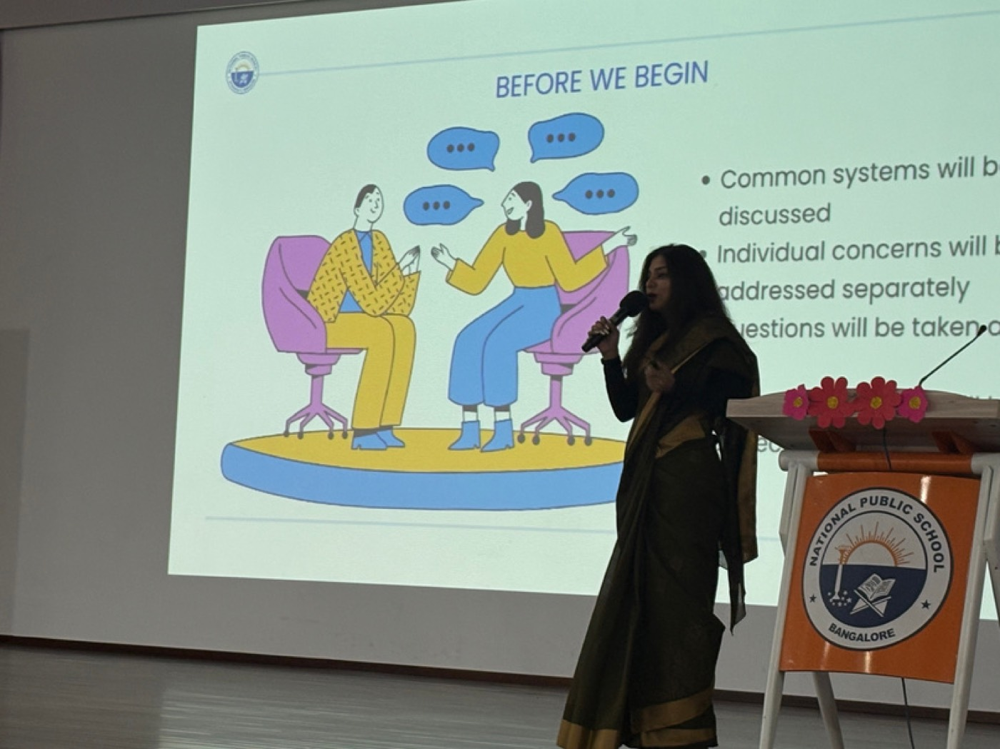
Strong school cultures are built when parents and schools work from the same expectations.
Parents are an essential part of school improvement. My parent orientation programmes focus on building trust, clarifying expectations and creating consistent partnerships between home and school.
Focus Areas
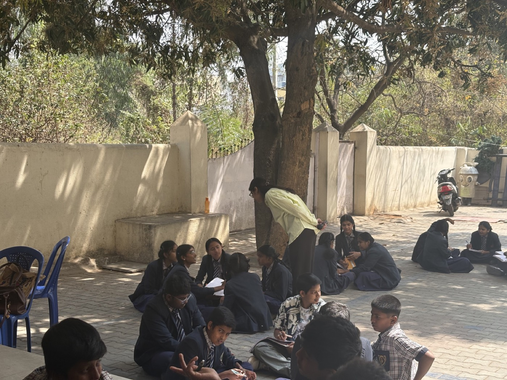
Students don't just need information. They need better ways of thinking.
My student workshops are designed to strengthen the thinking, communication and decision-making skills that students carry into every subject, every decision and every stage of life.
Focus Areas
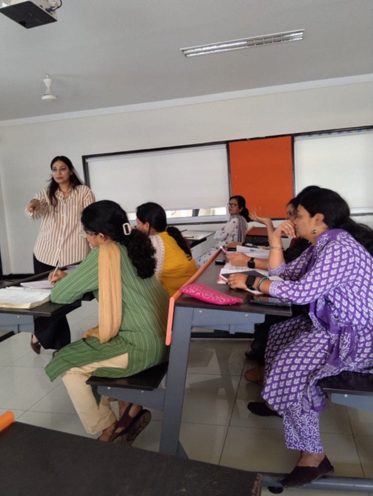
Specialised training, curriculum support and academic consulting.
Beyond ongoing school partnerships, I collaborate with education organisations and schools through independent teacher training workshops, the Scholastic Singapore AlphaMath programme, and curriculum & resource development.
- Independent teacher training workshops across Bengaluru, tailored to school priorities
- Scholastic — Singapore AlphaMath: freelance training, classroom implementation support and additional question design
- Curriculum & resource development: classroom-ready resources, lesson materials, question design and enrichment tasks
Innovative Teaching Practice: AI Explanation Audit
In this lesson, AI is used as a teaching assistant rather than an answer machine. Before class, the teacher uses AI to generate explanation cards, misconception statements, follow-up questions and simplified prompts. During class, students compare these AI-generated explanations with hands-on observations, sort their accuracy, justify their judgement and rewrite any explanation scientifically. The teacher remains the first verifier of content and reasoning.
Learning Outcomes
- Conceptual understanding of force, inertia, acceleration and action-reaction
- Scientific observation and evidence-based reasoning
- Critical thinking through error analysis and misconception checking
- Collaboration through shared group practice
- AI literacy through questioning and checking machine-generated explanations
- Reflection through self- and peer-assessment
Role of the Teacher
- Designs the learning sequence and selects the motion scenarios.
- Uses AI before class to prepare explanation cards, prompts and scaffolds.
- Checks AI output for accuracy and appropriateness.
- Assigns roles, facilitates transitions and enables group processing.
- Gives real-time feedback, addresses misconceptions and closes the lesson with conceptual clarity.
What Students Do
- Predict, observe and discuss simple motion events in groups.
- Read AI-generated explanations and decide which are strongest.
- Use evidence to label explanations as correct, partly correct or incorrect.
Schools We Have Partnered With
- Vidyaniketan School, Hebbal
- Redbridge International Academy
- The Cambridge International School, Harlur
- New Oxford English School
- Lourdes English High School
- Supreme Public School, Mysuru
Every school has a different starting point. Let's find yours.
Areas of my work I'm continuing to document and share in more depth:
Every school has a different starting point. Let's find yours.
Open to working with schools across India on improvement partnerships, teacher training, and academic consulting.
Better schools aren't built through one big intervention. They're built through the right improvements, sustained over time.
Send an Email- Location Bengaluru, Karnataka — Open to working with schools across India
- Email vaishnavipsingh20@gmail.com
- Phone +91 77956 62489
- LinkedIn linkedin.com/in/vaishnavi-singh-b48519141